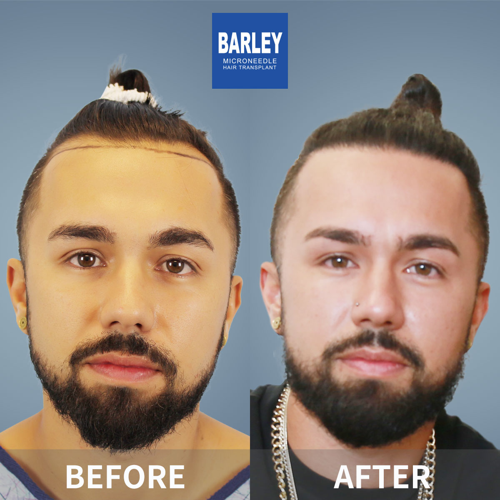
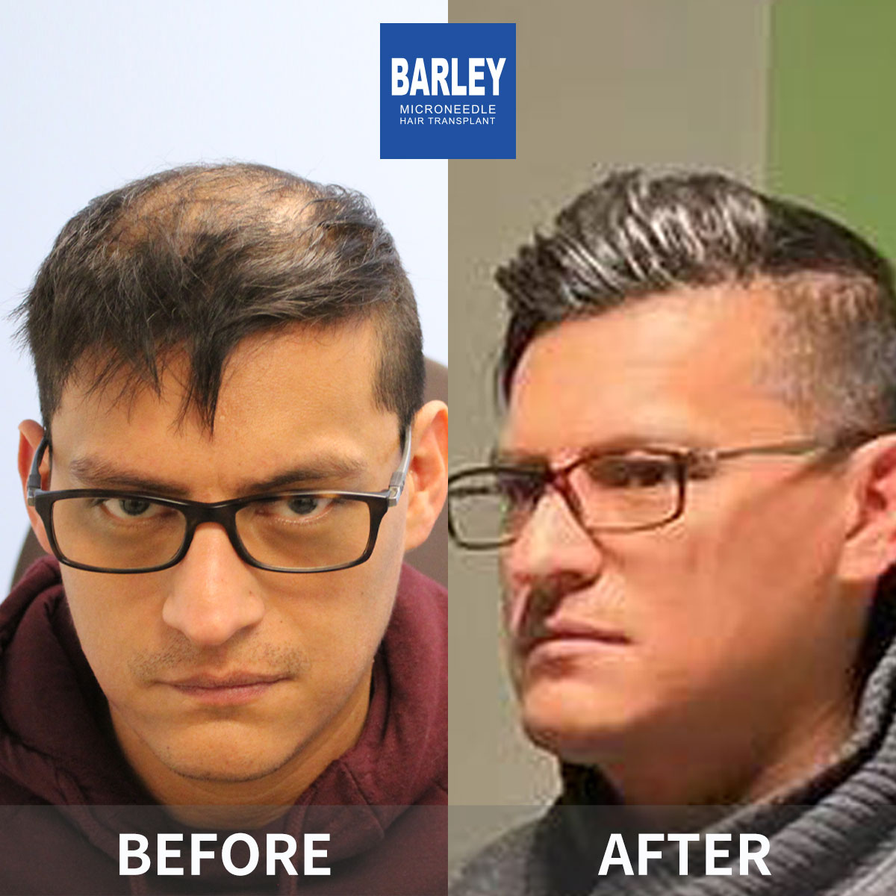
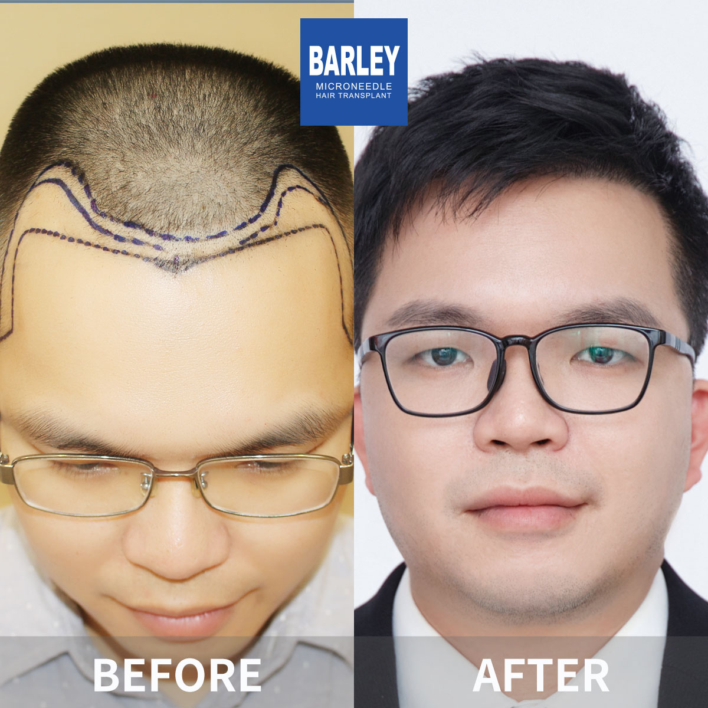
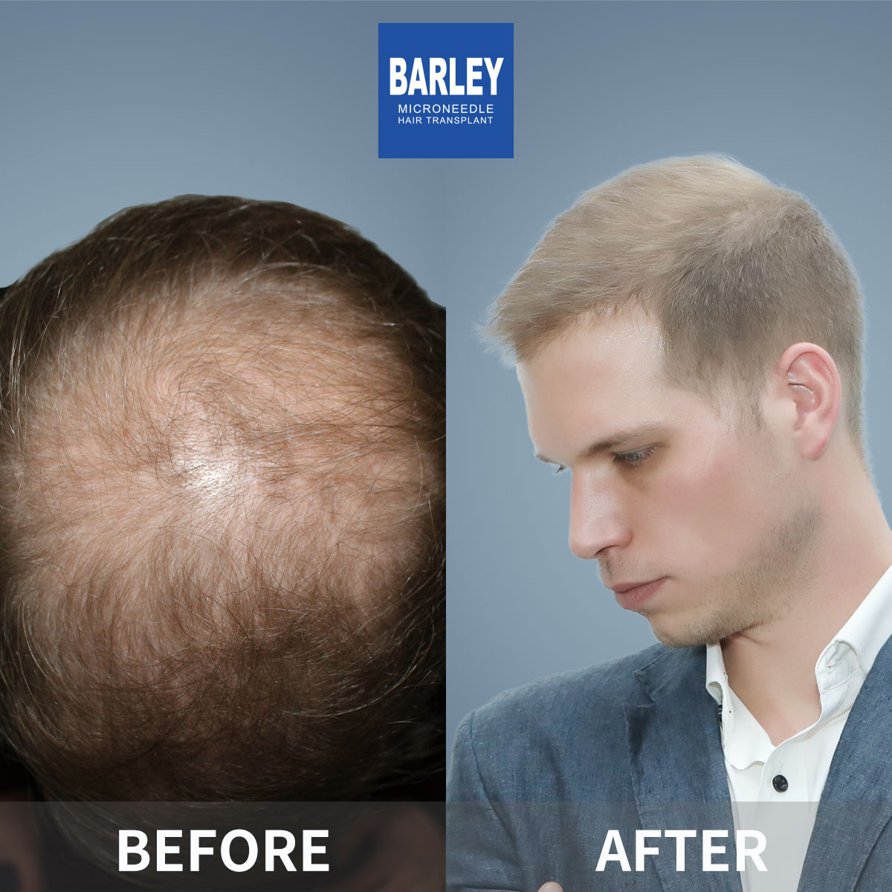
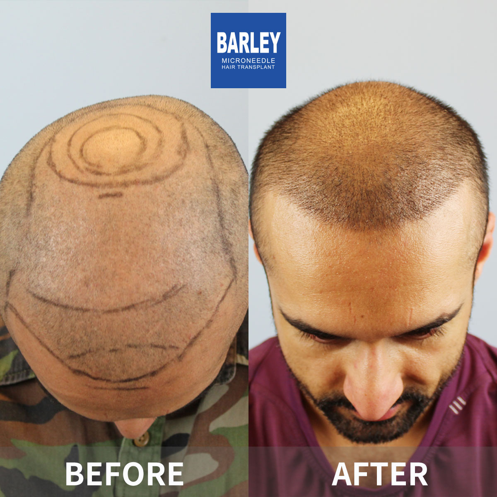
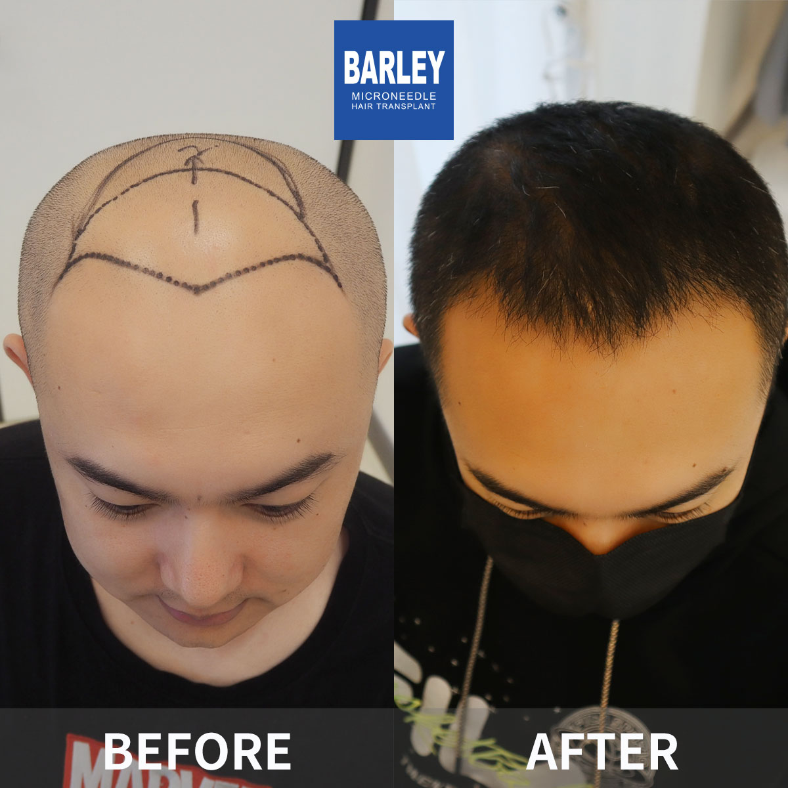
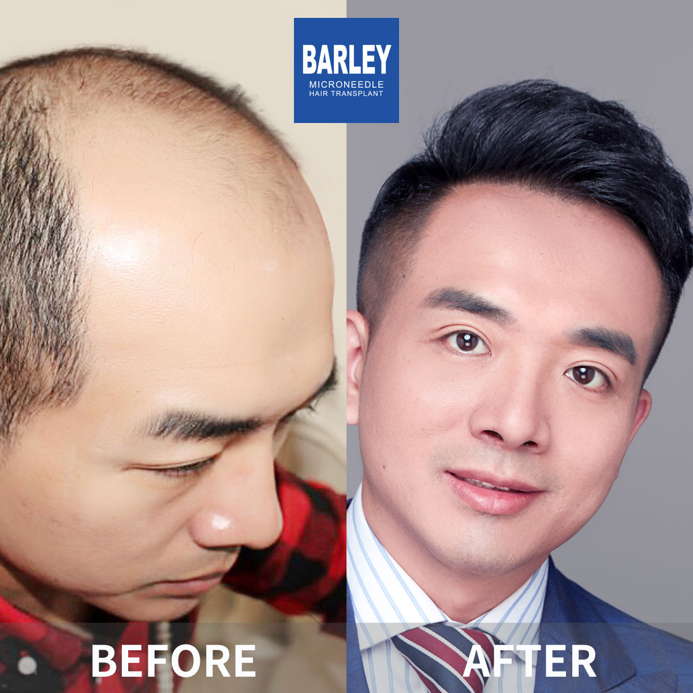
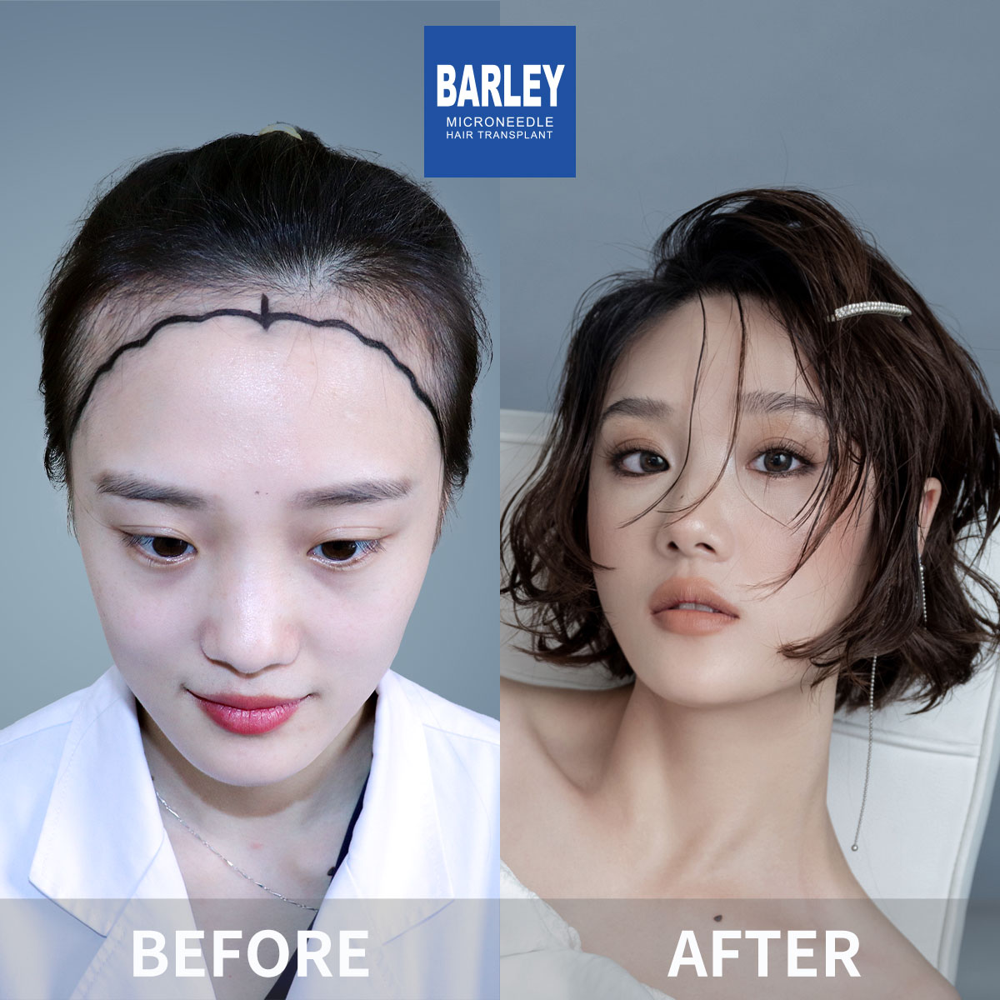
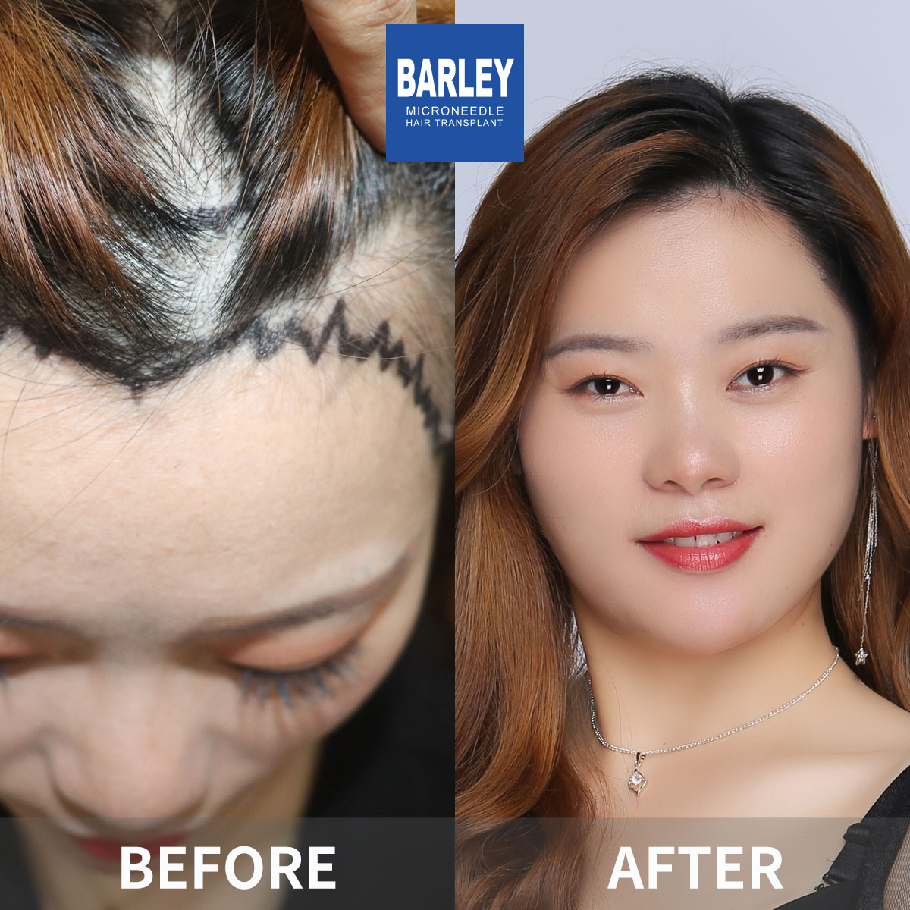
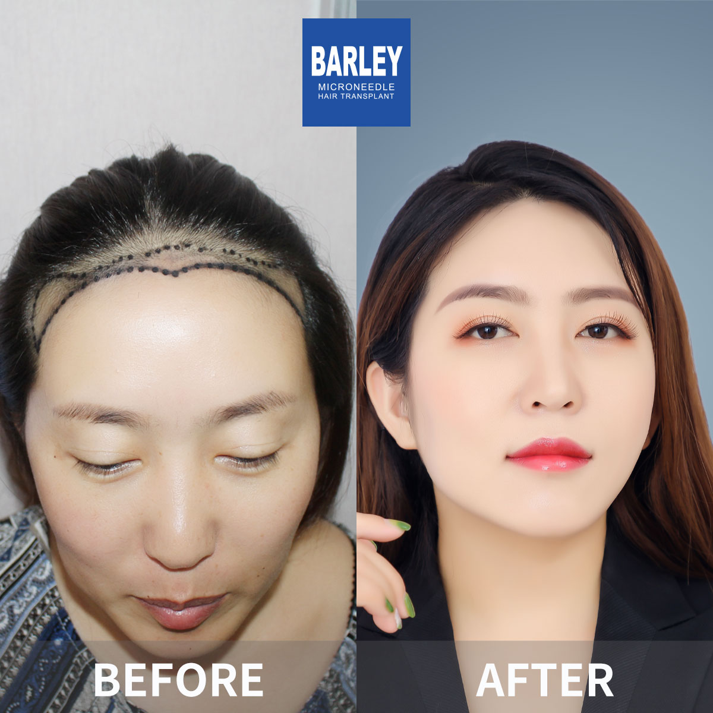

瀏覽我們成功的毛髮修復變身作品集






























了解我們在毛髮修復方面的影響力
透過真實患者變身體驗我們的專業
所有植髮案例均真實、未經過濾、未修飾。無庫存照片，無美顏濾鏡——只有真實的術前術後對比，不言自明。
遵循自然頭髮生長模式的定制植入，精確控制密度和角度。效果與現有頭髮完美融合——完全無法察覺。
精選健康毛囊，細緻分離和植入。卓越的存活率，均勻濃密生長，一次手術即可獲得持久效果。
與滿意患者的珍貴瞬間

手術成功後與醫療團隊合影

與醫師慶祝出色效果

另一位滿意患者分享喜悅
出院前與專家合影

術後與陳醫師合影的開心患者

興奮展示新造型的患者

對變身效果感到欣喜的患者
以驚人效果開啟新生活的患者
來自世界各地滿意患者的分享
"看了大量植髮前後對比案例才決定來這裡。現在自己的術前術後照也放上了展示牆！12個月後的植髮效果圖片讓所有朋友都讚嘆不已！"
"這家網站上的植髮前後對比案例讓我決定預約諮詢。現在我自己的蛻變效果同樣令人驚艷！醫師完美捕捉了我的自然髮線，密度也非常出色。真的是改變人生的體驗！"
"植髮成功案例中女性患者的案例特別少見，這裡卻有很多。我的頭髮加密案例被醫師納入展示，植髮效果圖片上頭髮密度和自然度都無可挑剔！"
"大面積禿頂的植髮前後對比最難做，但這裡的案例展示給了我信心。我的禿頂修復成功案例用了超過3000毛囊單位，現在頭髮濃密到像年輕人一樣！"
"在馬來西亞看過太多不理想的植髮效果圖片，所以專程來這裡。植髮成功案例的真實性讓我安心，我的眉毛移植前後對比照現在也成了醫師的展示案例！"
"新加坡朋友推薦我來看植髮前後對比，案例展示中的真實效果令人信服。我的髮際線修復植髮成功案例被放在案例頁面的首頁，現在自信心完全回來了！"
體驗我們現代舒適的設施

私密專業空間

舒適術後空間

溫暖歡迎入口

最先進的設施

在高級休息室放鬆

無菌先進設備
查找有關植髮的常見問題解答
點擊複製聯絡方式
15810155700
+86 13730143529
hairtransplant@qq.com